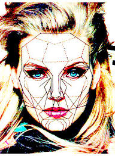

ESTETICA
Estética es la disciplina que estudia la naturaleza de la belleza y la percepción de la misma por parte de los individuos, por lo cual se relaciona estrechamente con el arte.
La palabra estética deriva del latín moderno aestheticus, y éste del griego aisthētikós que significa “percepción o sensibilidad” a través de los sentidos.
Estética posee diferentes acepciones según el contexto donde se emplee, aunque todas giran en torno a la percepción de lo bello.
En contextos cotidianos, se usa para referirse a la apariencia física de una persona, de una cosa o de espacio. Por ejemplo: "Poner el basurero en la puerta afecta la estética de la fachada".
La palabra estética puede referirse también a la higiene y a la presentación personal. Por ejemplo: "Este niño ha obtenido A en estética: siempre está pulcro y sus trabajos lucen ordenados".
De allí también que algunas veces se llame estética a los centros de embellecimiento que incluyen servicios como depilación, cuidado de la piel, masajes reductores, tratamientos rejuvenecedores, etc.
Se habla de cirugía estética cuando se realiza una intervención quirúrgica cuyo propósito es mejorar el aspecto físico de una persona.
Los principales valores estéticos son: la belleza, el equilibrio, la armonía, la tragedia y la horribilidad.
ESTETICA, FILOSOFIA Y ARTE
En filosofía, estética es la rama que estudia la esencia de lo bello y de la percepción de la belleza del arte, es decir, el gusto. Como campo de estudio diferenciado, esto es, como disciplina, la estética surgió en el siglo XVIII, en el contexto del Iluminismo o Ilustración.
Ya para el año 1735, el filósofo alemán Alexander Gottlieb Baumgarten (1714-1762) describía a la estética como “la ciencia de la sensibilidad y de las relaciones del arte con la belleza” en su texto Reflexiones filosóficas en torno al poema.
Otro tanto haría el filósofo prusiano Immanuel Kant (1724-1804) en su obra Crítica del juicio, al señalar que la estética es “la rama de la filosofía que estudia e investiga el origen del sentimiento puro y su manifestación como arte”.
No obstante, la discusión sobre la naturaleza de lo bello es tan antigua como la filosofía y el arte. Por esta razón, ha sido tratada desde la Antigua Grecia por autores como Platón y Aristóteles. Platón teorizó sobre la belleza y el arte en obras como El banquete y La República. En ellos, introdujo la noción de las artes como imitación de la Idea (mímesis).
LO BELLO, LO ESTETICO, LO ARTISTICO
Las distintas connotaciones que hacen posible el diálogo entre el diseño y las obras públicas tienen tres referentes categóricos muy evidentes: lo bello, lo estético y lo artístico. Sus significados son mutables según sea la cultura, la tradición y el contexto histórico en que se utilicen sus términos.
A continuación se hace un sesgado resumen de su origen, asociando cada categoría a las tres grandes épocas de la cultura occidental: clásica, moderna y contemporánea.
Lo bello en el pensamiento griego se entendía como un concepto objetivo, lógico y racional, asociado a las leyes de la naturaleza. Para que la obra del hombre fuese considerada bella ésta debía responder a los cánones análogos a las leyes eternas que regulan el comportamiento de la naturaleza. El cánon expresaba lo esencial, lo proporcionado, lo armónico, lo ideal y aspiraba a la perfección; una perfección no basada en lo cuantitativo sino en la unidad universal. Utilizando las herramientas de orden, medida, mensurabilidad, simetría, ritmo y armonía; las construcciones humanas se guiaban por una visión matemático-geométrica muy estricta.
EL ARTE Y LAS CATEGORIAS ESTETICAS.
Categorias Esteticas
La Belleza.
Lo sublime.
Lo trágico.
Lo feo.
Lo grotesco.
Lo cómico.
